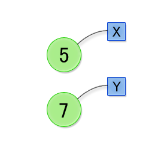

前回はプログラミングの基本知識の紹介と、簡単なプログラムを通した基本文法の解説を行いました。
今回は、より複雑な数値計算をできるようにするため、C言語の文法のうち以下の事柄について解説します。
第 1 章で紹介したプログラムは、計算らしい計算をしませんでしたが、四則演算のような普通の計算をやらせることもできます。以下ではC言語が提供する算術演算機能について紹介します四則演算
まず、C言語が用意している算術演算機能のうち、もっとも基本的な四則演算について紹介します。C言語で四則演算をおこなうため演算子（演算記号）は次のようになります。
演算名 C言語での表現 加算 + 減算 - 乗算 * 除算 / 剰余 % それぞれの演算子は、一般の算術式と同じように項と項の間に書きます。
以下にこれらの演算子を使ったプログラムの例を示します。/* 四則演算を実施する */
#include <stdio.h>
int main() {
printf("10 + 3 = %d\n", 10 + 3);
printf("10 - 3 = %d\n", 10 - 3);
printf("10 * 3 = %d\n", 10 * 3);
printf("10 / 3 = %d\n", 10 / 3);
printf("10 mod 3 = %d\n", 10 % 3);
return 0;
}このプログラムをコンパイル、実行すると次のように表示されます。
10 + 3 = 13
10 - 3 = 7
10 * 3 = 30
10 / 3 = 3
10 mod 3 = 1ここで、除算の結果に注目してください。 一般的な計算とは異なる結果になっています。 本来、10 / 3 の結果は 3.33333333... であるのが自然です。ところがC言語では、演算子の左右の項が共に整数であると、除算の結果も整数になります。したがって小数点以下を切り捨てて 3 となります。
このため、下のプログラムを実行すると 10 ではなく 0 を表示します。これは、1 / 10 の計算結果が 0 になるためです。小数点以下を切り捨てずに計算を続ける方法は、本章の後半で説明します。/* 切り捨ての計算例 */
int main() {
printf("%d\n", 1 / 10 * 100); /* 0と表示 */
return 0;
}その他の演算
一般の計算では累乗や階乗といった演算をおこなうこともあります。しかし、C言語では直接それらの演算を表現できないため、以下のように式を書き下す必要があります。
/* 累乗・階乗を計算する */
#include <stdio.h>
int main() {
printf("5 ^ 3 = %d\n", 5 * 5 * 5);
printf("5! = %d\n", 5 * 4 * 3 * 2 * 1);
return 0;
}実行結果は次のようになります。
5 ^ 3 = 125
5! = 120演算子の優先順位
一般的な数式と同じようにC言語の数式でも演算には優先順位があります。 これをC言語では演算子の優先順位と呼びます。演算子の優先順位は、以下に示すとおりで一般的な数式の場合とほぼ同じです。演算の実行順序を明示的に指定したいときは、一般的な数式同様、括弧 ( と ) を使います。
※ C言語では四則演算を示す演算記号（+, -, *, /, %）を算術演算子と呼びます。
優先順位 算術演算子 高 *, /, % 低 +, - また、同じ優先順位の演算子の場合はより左側にある演算子が優先的に計算されます。これも一般的な数式と同じです。例えば、次のプログラムを見てください。
#include <stdio.h>
int main() {
printf("%d\n", 5 + 3 % 4);
printf("%d\n", 5 * 3 % 4);
printf("%d\n", 10 % 2 * 3);
printf("%d\n", 10 % 2 + 3);
return 0;
}実行結果は次のようになります。8 3 0 3分数の表現
C言語では分数を直接表現する方法が用意されていません。 したがって、しばしば除算と浮動小数点数で代用します。演習 2−1
以下の数式をC言語で計算した結果を予想し、実際にプログラムをコンパイル・実行した結果と比べてください。
- 5 + (3 - 8 * 2 + (13 % 3) / 5) * 2
- -9 * (2 / 7) + (4 % (1 + 2) * 6)
- +8 / -3 + 4 * 3 % +7 / 2
四則演算と同様に頻繁に利用されるものに、比較演算があります。C言語でも比較演算を扱うことが可能です。 ここでは比較演算を使った式の書き方と、その結果を利用して計算する部分式を切り替える方法を学びます。
比較演算
C言語では一般的な比較演算子のほとんどが利用可能です。整理すると次のようになります。
演算名 C言語での表現 右辺より左辺がより大きい > 右辺より左辺がより小さい < 以上 >= 以下 <= 等しい == 等しくない != 「>=」などは2文字で1つの演算子を表します。2つの文字の間に空白を入れてはいけません。また、等号は「=」ではなく「==」で、不等号が「≠」ではなく「!=」であることに注意してください。
特に「==」と「=」は混同しやすいので要注意です。C言語では「=」は等号ではなく代入という演算を意味します。代入については第 4 章で紹介します。
3 項演算
比較演算はしばしば「条件」を表すのに使われます。例として 3 項演算を紹介します。
3 項演算は以下のように 3 つの式（項）から構成されます。
《条件式》 ? 《式1》:《式2》ひとつめの式は条件式です。この式が成り立つ（これを「真」といいます）場合には《式1》の計算結果がこの 3 項演算全体の計算結果になります。一方、成り立たない場合（これを「偽」といいます）には、《式2》の計算結果が 3 項演算全体の計算結果になります。
下 に 3 項演算を使ったプログラムの例とその実行結果を示します。#include <stdio.h>
int main() {
printf("5と3で大きいのは %d\n", 5 > 3 ? 5 : 3);
printf("5と3で小さいのは %d\n", 5 < 3 ? 5 : 3);
return 0;
}このプログラムの実行結果は次のようになります。
5 3演算子の優先順位（再）
これまで算術演算子と比較演算子について説明しました。 それら全ての演算子の優先順位をまとめた表を下に示します。
優先順位 演算子 高 *, /, % +, - >, <, >=, <=; ==, != 低 ? : (3 項演算子) これまでに説明した演算子を使って、少し複雑な式を計算するプログラムを書いてみましょう。 プログラムを読み、実行結果を予想してみてください。
#include <stdio.h>
int main() {
printf("%d\n", 9 * 9 - 2 * 2 < (9 - 2) * (9 - 2) ? 1 : 0);
printf("%d\n", (5 < 9 ? 5 : 9) + (3 != 5 ? 0 : 1));
return 0;
}実行結果は次のようになります。0
5
次にプログラミングにおける重要な要素である変数について説明します。
変数の宣言
C言語における「変数」は、数学における「変数」と本当は少し異なるものですが、とりあえずは普通に「数値や計算結果につけた名前」であると考えておけばよいでしょう。
たとえば、5 の 3 乗、5 の 2 乗、5 の 1 乗、5 の 0 乗 の和を計算する下のようなプログラムを考えてみます。
#include <stdio.h>
int main() {
printf("%d\n", 5 * 5 * 5 + 5 * 5 + 5 + 1);
return 0;
}このプログラムを変更して、数値 5 を 7 に変えた計算をするとします。すると、プログラムの 5 の部分（全部で 6 箇所）を直す必要があります。 しかし、元のプログラムを変数をうまく活用して書いておくと、後から 5 を 7 に変えたくなったときの修正箇所を少なくすることができます。
変数を活用して修正しやすくしたプログラムを下に示します。#include <stdio.h>
int main() {
int x = 5; /* 変数 x の値を 5 とする */
printf("%d\n", x * x * x + x * x + x + 1);
return 0;
}新しいプログラムでは、
int x = 5;と書くことで変数 x の値を数値 5 にしています。プログラムの残りの部分では変数 x を参照しているので、計算したい値を 5 から 7 に変えたい場合は、この行を修正するだけですみます。
int x = 7; /* 変数 x の値を 7 とする */このように変数を利用することで、プログラムの修正が容易になります。
（クリックで図が拡大）
変数名の制約
変数は次のように書いて使用を宣言すると、プログラムの残りの部分（その行より下の部分）で自由に参照できるようになります。int 《変数名》 = 《値》;変数名は基本的に自由につけることができますが、以下の制約があります。 変数名がこの制約に違反すると、コンパイルエラーとなり、プログラムをコンパイルできません。
- 同じ名前の変数を 2 つ宣言することはできません。同じ値であっても許されません。ただし大文字と小文字、例えば A と a は違う文字と見なされます。したがって a0 と A0 は異なる名前と見なされます。
- 変数名の先頭文字にはアルファベット（大文字と小文字）と _ だけが使えます。数字は使えません。2 文字目以降には英数字と _ が使えます。
例えば Abc_333 は正しい変数名ですが、3_dfv は変数名として不正です。
- int、char、long、if、else、for など、プログラム中で特別な意味をもつ単語（予約語といいます）を変数の名前にすることはできません。
上では変数の使用を宣言するとき、行頭に int と書きました。しかし、int と書くのはこれまでのプログラムでは整数しか扱ってこなかったためです。C言語では整数の他にも浮動小数点数（小数のこと）も扱えるので、本当は変数の値の種類（や範囲）に応じて書くことを変えなければなりません。《データ型》 《変数名》 = 《値》;先頭には値の種類を書きます。プログラミング言語では、この値の種類のことをデータ型（あるいは短く「型」）といいます。整数は int 型（INTeger 型の意味です）なので、上では int と書いたのです。いろいろなデータ型
C言語で使える主立ったデータ型を下の表に示します。大きさや値の範囲は一般的なものです。厳密には、使っているコンパイラやオペレーティングシステムによって異なります。
型の名前 大きさ 種別 値の範囲 char 1 byte 整数（文字） -128〜127 unsigned char 1 byte 整数（文字） 0〜255 short 2 byte 整数 0〜65535 unsigned short 2 byte 整数 -32768〜32767 int 4 byte 整数 -2147483648〜2147483647 unsigned int 4 byte 整数 0〜4294967295 float 4 byte 実数（小数） -1038〜1038 double 8 byte 実数（小数） -10306〜10306 「大きさ」は、その型の値を表現するのにコンピュータ内部で何桁の 2 進数を用いているかを意味します。2 進数 1 桁を bit といい、8 bit が 1 byte ですから、int 型の値は（一般的なパソコン等では）内部的に 32 桁の 2 進数で表現されていることがわかります。char や unsigned char 型の変数の値の種類（と範囲）は小さな整数です。これらの型は変数は文字を表すのにも使われます。６章で詳しくふれますが、コンピュータ内部では、文字は対応する文字コードの番号に直して計算されています。例えば大文字の A の文字コードは（一般的には）65 です。したがってchar c = 'A';
と書くと変数 c の値は 65 になります。値として文字を用いるときは、必ずその文字の前後をシングルクオート ' で囲います。こうすることで文字 A と変数 A を区別します。別な考え方として、シングルクオートは、間にはさまれた文字の文字コードの番号を計算するための特別な演算子である、と考えることもできます。つまり 'A' は計算すると 65 になる式である、というわけです。実際、変数 c の値は 65 ですし、c + 1 をコンピュータに計算させたら答えは 66 です。なお 66 は大文字 B の文字コードです。C 言語のプログラムでは、どうして色々なデータ型を使い分けなければならないのでしょうか。int 型など使わずに、全てを double 型にできれば簡単です。ところが実際には、最低でも int と double（と char）ぐらいは正しく使い分けなければなりません。
ごく簡単に理由をいうなら、データ型を使い分けるのはプログラムを高速に実行するためです。普通のコンピュータは、例えば整数と小数で異なる演算回路（ハードウェア）を使いますが、整数用の回路の方が高速です。ですから、値の範囲が整数なら int 型を使った方がよいのです。そのぐらい、コンピュータが自動的に判別してくれればよさそうなものですが、少なくとも C 言語ではそのようなことはしてくれません。整数
データ型として int を選ぶと、計算結果に大きな影響があることがあります。式の中の項が int 型の変数や整数定数ばかりのときは、計算結果が int 型になるように式全体が計算されます。そのため、
本章の冒頭で述べたように、10 / 3 の計算結果が 3.333.. ではなく 3 となってしまいます。
計算結果を double 型にしたいときは 10.0 / 3 や 10 / 3.0、あるいは 10.0 / 3.0 のように、一方もしくは両方の項を小数（double 型）にします。double 型の変数にしてもかまいません。そうするとコンピュータは小数の除算回路を使って計算するので、計算結果も小数になります。整数用の除算回路を使うと、計算結果も必ず整数になります。浮動小数点数
float 型と double 型が表すのは小数です。正確には浮動小数点数といいます。コンピュータ内部では一般に 32 桁あるいは 64 桁の 2 進数ですが、2 進数への変換方法が異なるので、表せる小数の大きさや精度が float と double で異なります。先に示した表における値の範囲はおおよそです。普通のプログラミングでは、double 型の方を使っておけば問題ないでしょう。浮動小数点数の実現の仕方はいろいろありますが、C 言語の場合、通常 IEEE754 形式と呼ばれる標準規格が使われています。 IEEE754形式は小数を以下のような3つの整数に分けて表現します。
《小数》 = 《符号部分》 × 2《指数部分》 × 《仮数部分》
- 符号部分
正負の符号を表す部分。1 bit（2 進数 1 桁）で、0 なら正、1 なら負。- 指数部分
8 bit か 11 bit の整数。- 仮数部分
小数を 2 進数で表したもの。これを浮動小数点数と呼ぶのは、小数点の位置が 1 の位の右側にあるとは限らないからです（あちこち動く）。C言語では使われませんが、固定小数点数というものもあります。この場合、小数点の位置は必ず 1 の位の右側です。したがって限られた桁数では、固定小数点数の場合、表せる数の範囲がせまくなります。
丸め誤差
コンピュータで実数を扱いたいときにデータ型として double 型や float 型を選ぶと、内部的には浮動小数点数（つまり有限小数）で表せる範囲内でしか計算されません。一般に float 型の有効桁数はおおよそ 7 桁程度、double 型の有効桁数は 15 桁程度です。したがって計算精度には限界があります。
もちろんプログラムをとても工夫すれば、分数や無理数を含めた範囲で計算することは可能ですし、また分数や無理数をデータ型としてもつプログラミング言語もあります。しかし、普通のコンピュータは整数と浮動小数点数の演算回路しかもちませんから、分数や無理数を含めた範囲で計算しようとすると、計算速度は遅くなります。
桁数の制限から生まれる計算結果の誤差のことを丸め誤差といいます。コンピュータを使って計算をおこなうときは、この丸め誤差に注意を払う必要があります。
丸め誤差を確認する簡単なプログラムを以下に示します。実行すると、表示する値が 1 になると予想できますが、実際には丸め誤差のため、コンピュータによっては表示される値は 1 ではありません。#include <stdio.h>
int main() {
float x = 1.0 / 3.0; /* 変数 x の値を float 型で 0.333333.... とする */
printf("%.10f\n", x * 3); /* %.10fは「小数を小数点以下10桁まで表示する」という意味 */
return 0;
}実行すると次のように x * 3 の計算結果が表示されます。この計算はいわゆるIntel x87 fpu 命令を使って実行しています（コンパイラが gcc なら -mfpmath=387 オプションをつけてコンパイル）。1.0000000298ところで丸め誤差とは異なりますが、整数の場合も桁数に限りがあるので注意が必要です。普通、整数を扱うときは int 型を使いますが、int 型は 32 bit 整数だとすると int 型で表せる最大の数は約 20 億です。例えば巨額のお金を扱うようなプログラムの場合、int でプログラムを作ると問題がおきる可能性があります。そのような場合は long long int 型（64 bit 整数）を使います。
本章の内容を踏まえて、以下の演習問題に取り組んでください。演習 2−2
次のプログラムと同じ結果を返す、変数を使ったプログラムに変更してください。#include <stdio.h>
int main()
{
printf("%d\n", (5 - 2) * (5 - 2) + (8 - (5 - 2)) * (8 + (5 - 2)));
return 0;
}演習 2−3
次のプログラムと同じ結果を返す、変数を使わないプログラムに変更してください。#include <stdio.h>
int main() {
int x = 5;
int x_2 = x * x;
int x_4 = x_2 * x_2;
printf("%d\n", 4 * x_4 + 4 * x_2 + 1);
return 0;
}演習 2−4
プログラムの冒頭で変数 x の値を自分で選んだ適当な整数とし、その値が偶数の時は x2 を、奇数の時には x3 を表示するプログラムを作成してください。
ヒント：3 項演算を使ってください。
Copyright 2009-2011 the Compview project,
Tokyo Institute of Technology. All rights reserved.
{kind=link}